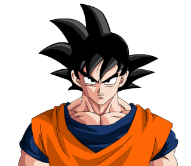

Son Goku
The man who saved the Earth and the Universe Countless times

This is a picture of the strongest man in the universe Goku.
Here is a list of Goku's accomplishments in chronological order
- He was born under the name Kakarot on the Planet Vegeta
- When he was still an infant he was sent on a spaceship to travel to Earth in order to take it over.
- Goku has the ability to turn into a giant ape when he sees a full moon and accidentally kills his grandpa (who adopted him) at age 10
- At age 12 he meets Bulma and goes on various adventures in search of the 7 Dragon balls
- He Defeats King Piccolo and saves the world!
- He finally wins the World Martial Arts Tournament
- He defeats Vegeta on Planet Earth
- He travels to Namek to be the frist Saiyain in a thousand years to turn Super Saiyain and defeats Frieza
- He trains his son G ohan who eventually goes on to kill Perfect Cell
- Goku Saves the world again by defeating the Evil Majin Buu
“Power comes in response to a need, not a desire.”
- Goku